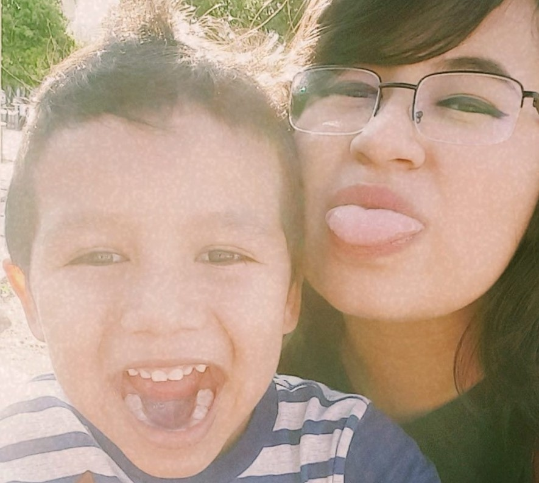

A biography, or simply bio, is a detailed description of a person's life. It involves more than just the basic facts like education, work, relationships, and death; it portrays a person's experience of these life events. Unlike a profile or curriculum vitae (résumé), a biography presents a subject's life story, highlighting various aspects of his or her life, including intimate details of experience, and may include an analysis of the subject's personality. Here I will describe a little of my life, my aspirations, what I have done, the people who have been part of my life and what I have achieved throughout it, I hope it will be a start for them to know me better as a person and professional .
They are my two best friends, Josue, me and Maria, we were at my son Dante's party.  He is my son, we were in the park, and then we saw the movie of the lion king.
My first favorite hobby is dancing, when I started, I liked the fact that I could do it for at least 5 minutes, once when I went through a very difficult situation, dancing was what I let stress and sadness leave me body, I could relax and feel every muscle.
Drawing has been more of a habit for me, since elementary school all my notebooks have a small drawing on the top, so even to the faculty, even in my codellege notebook I have drawings lol, I feel it is a way to represent what they see My eyes depending on my mood.
Listening to music is the oldest hobby I've had, since elementary school, I pay attention to the lyrics and what the composer tries to convey at that moment, especially classical music I feel that when I listen to it in the truck I am the protagonist of A play.